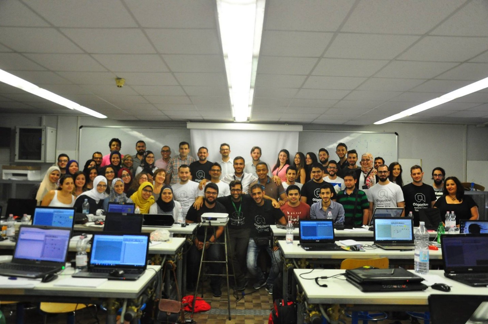
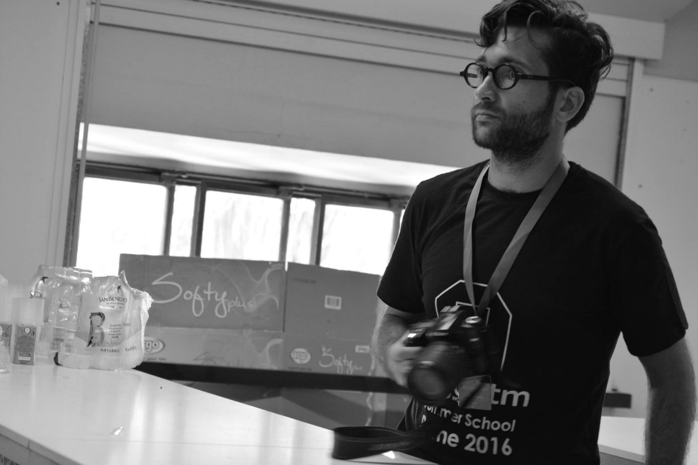
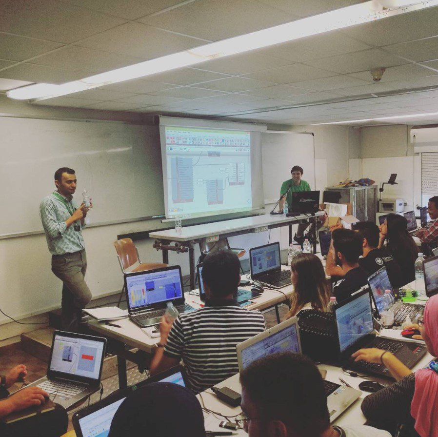
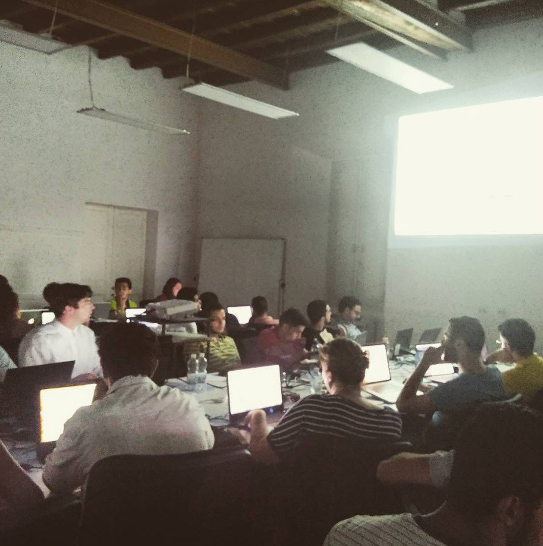
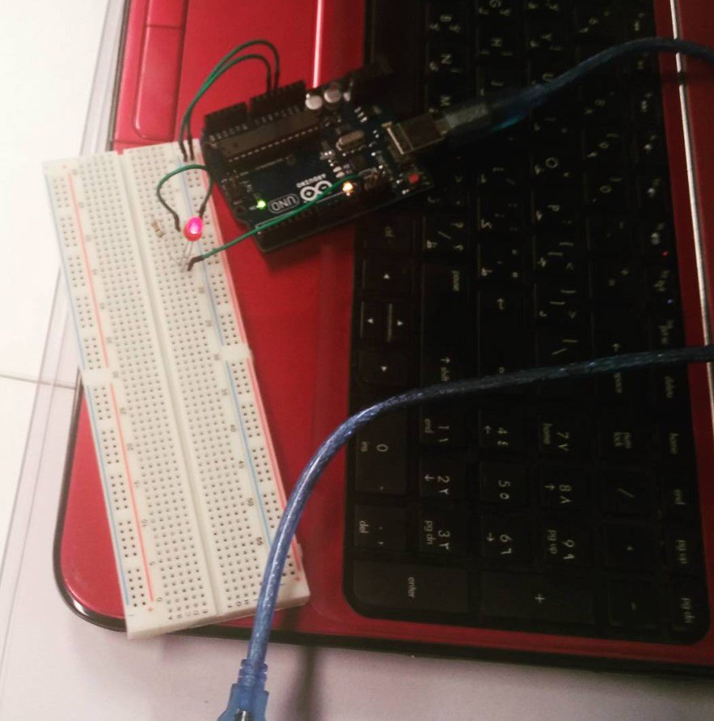

/ WORKSHOP — SUMMER SCHOOL
Algoritm Parametric
Design Summer School
Two summers in Rome accompanying students through a digital design programme — computational architecture, generative form and digital fabrication, where art, engineering and technology meet.

/ OVERVIEW
A new digital paradigm for design and architecture.
In July 2015 and again in July 2016, I accompanied a group of students to Rome to explore computer-generated parametric forms and structures. Computational technology moves quickly — reshaping how we act, think, communicate and build — and the summer school sets out to give students a foothold in it.
The programme builds practical experience across the emerging currents of computational architecture: generative design, algorithmic analysis, design optimisation, digital fabrication and smart kinetic systems — merging art, architecture, engineering, sustainability and technology into one way of working.
Under a parametric strategy, form is not superimposed but linked to performance: students are given an overview of building science and control techniques that tie the two together, and a look at the computational tools available in practice for assessing a design as it develops.
The school encourages close observation of how materials behave, and their use in design through direct experience — investigating modern materials and their digital fabrication first-hand, working with algorithms and sensors that recognise and respond to human action and environmental change, until the digital and the real meet in each student’s final project.



